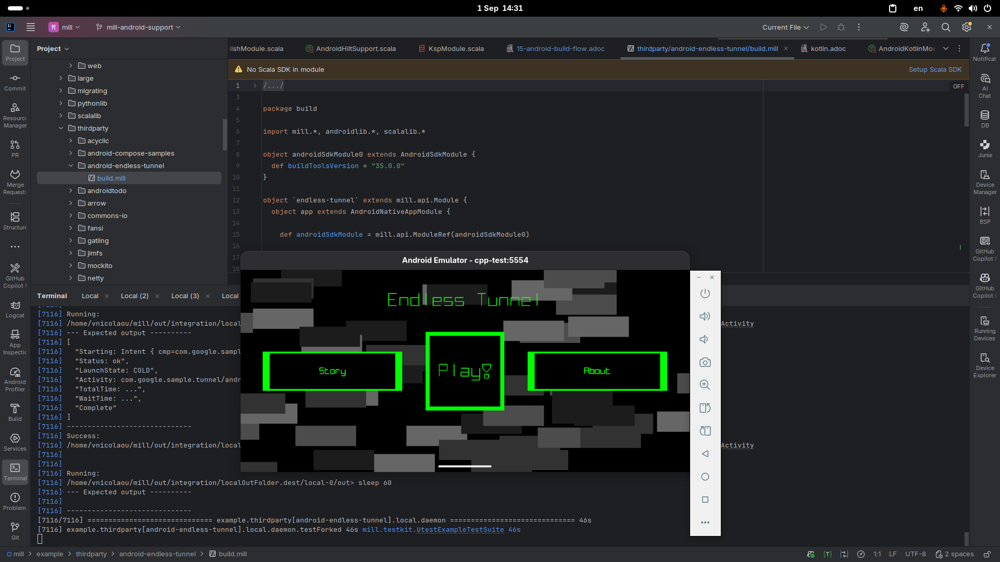
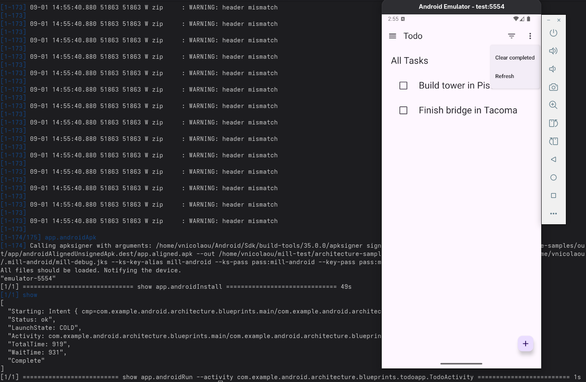
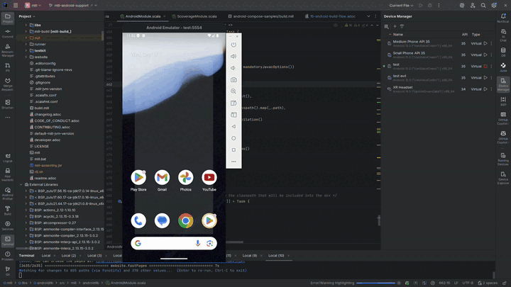
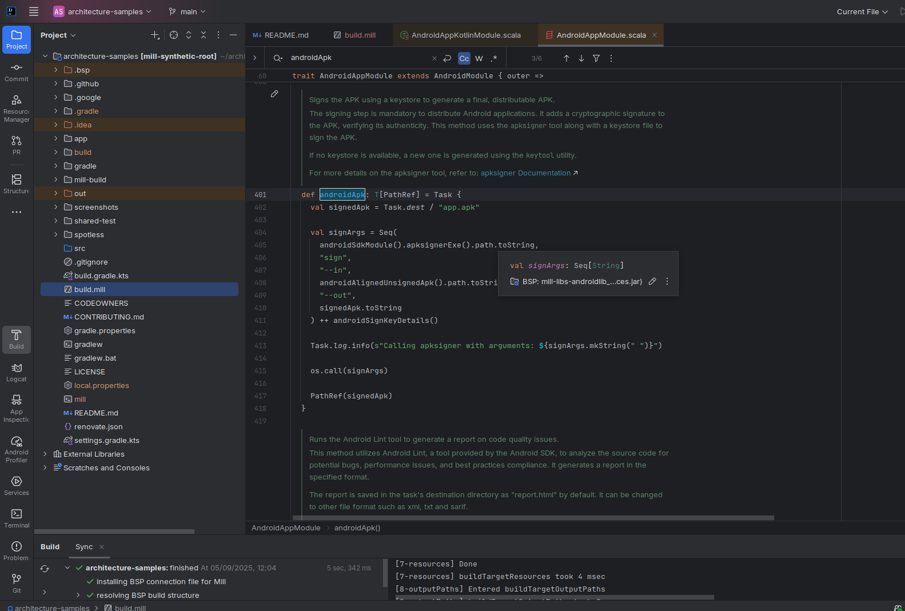

Mill as an Alternative Android Build Tool
Vasilis Nicolaou, 17 September 2025
Until recently, Gradle was the only realistic option for Android builds. Today, Mill provides an alternative to Gradle that is easier to use and learn.
In less than a year, Mill went from minimal Android support to producing installable APKs for projects as complex as:
Why you might prefer this to Gradle
Because Mill’s Android support is built out of simple, object-oriented modules (AndroidModule, AndroidAppModule, etc.), the entire pipeline is transparent and hackable. If something doesn’t work, you don’t need to wait for a plugin update, you can open the task in your IDE, see the source, and tweak it yourself. This is the same design that let us implement end-to-end Android support in under a year, and it’s what makes Mill attractive if you value control and debuggability in your build.
For example, you can inspect how Mill builds an Android APK with:
$ ./mill inspect __.androidApk
[1/1] inspect
app.androidApk(AndroidAppModule.scala:439)
Signs the APK using a keystore to generate a final, distributable APK.
The signing step is mandatory to distribute Android applications. It adds a cryptographic
signature to the APK, verifying its authenticity. This method uses the `apksigner` tool
along with a keystore file to sign the APK.
If no keystore is available, a new one is generated using the `keytool` utility.
For more details on the apksigner tool, refer to:
[[https://developer.android.com/tools/apksigner apksigner Documentation]]
Inputs:
androidSdkModule0.apksignerPath
app.androidAlignedUnsignedApk
app.androidSignKeyDetails
...This post is a walkthrough of the basic Android build flow in Mill: what it does, why it’s complex, and why Mill makes it easier to reason about.
The Android build process
Building and running a mixed Java/Kotlin application can be as simple as:
Android adds a dozen more steps, each involving different tools and formats:
-
Resource compilation (aapt2) for layouts, drawables, and strings
-
Manifest merging (app + library manifests)
-
Code shrinking and obfuscation (R8/Proguard)
-
DEX bytecode conversion (d8/r8)
-
APK packaging (resources + bytecode)
-
App signing (debug or release keystores)
-
Emulator deployment and test execution (ADB)
Each step is order-sensitive: resources must be compiled before classes, manifests merged before packaging, APKs signed before installation. With Gradle, these steps are usually hidden inside plugin logic. When we explored Gradle builds, we often had to reverse engineer its behavior to understand what was going on. Mill instead exposes each phase as a target you can call, inspect its sources, or override.
The Mill Android Build Pipeline
This flow considers plain apps without any dependencies. But real-world apps depend on libraries, which may have their own resources, manifests, and even native code. Android dependencies come with their own complexities:
-
Instead of a simple jar file that can be added to the classpath, Android libraries are distributed as AAR files, which are zip files containing compiled classes, resources, manifests, native libraries, Proguard files and more.
-
The AAR dependencies must be unpacked and each component processed separately in the appropriate step of the build pipeline.
The diagram above still doesn’t tell the whole story! It shows a typical build flow for a basic Android app, but there are more features to consider:
-
Hilt/Dagger code generation (annotation processing)
-
Jetpack Compose code generation (Kotlin compiler plugin)
-
Instrumented tests (separate APK, own resources, manifests, dependencies)
-
Native code (NDK builds, CMake integration)
We cover a lot of these architecture styles in various Android examples, based on Java, Kotlin and third party integration examples covering Android Compose and Dependency Injection with Hilt.
Endless tunnel sample app 
Try it out
Mill’s Android support is still young, but it already covers the full build pipeline: resource compilation, manifest merging, packaging, signing, running, and even testing on emulators.
What makes this different from Gradle are control and transparency: every build step is a visible Mill task, easy to run on its own, inspect, check its dependencies, or override, without needing any extra/third party plugins. That means you can debug problems faster, adapt the pipeline to your project’s needs, and extend it without fighting opaque built-in or plugin logic.
If you’re curious, the best way to appreciate this is to try it yourself:
Get the architecture-samples containing the Todo App.
> git clone git@github.com:android/architecture-samples.git
> cd architecture-samplesInstall mill
> curl -L https://repo1.maven.org/maven2/com/lihaoyi/mill-dist/1.0.5/mill-dist-1.0.5-mill.sh -o mill
> chmod +x mill
> echo "//| mill-version: 1.0.5" > build.mill
> ./mill versionConfigure the mill build
> curl https://raw.githubusercontent.com/com-lihaoyi/mill/bef0194f3eecb4c7938f07e0cfcdf8d741a04468/example/thirdparty/androidtodo/build.mill >> build.millStart the emulator and run the app
> ./mill show app.createAndroidVirtualDevice
> ./mill show app.startAndroidEmulator
> ./mill show app.androidInstall
> ./mill show app.androidRun --activity com.example.android.architecture.blueprints.todoapp.TodoActivityThe Android Todo App built with Mill 
Run the instrumented tests and watch the app being tested inside the emulator:
> ./mill app.androidTest
Let’s say you want to know how the apk is built. First, you can check the plan of androidApk, i.e. which
tasks it depends on:
$ ./mill plan app.androidApk
[1/1] plan
androidSdkModule0.sdkPath
androidSdkModule0.buildToolsVersion
androidSdkModule0.platformsVersion
androidSdkModule0.remoteReposInfo
androidSdkModule0.installAndroidSdkComponents
androidSdkModule0.buildToolsPath
androidSdkModule0.apksignerPath
androidSdkModule0.zipalignPath
app.mandatoryMvnDeps.super.javalib.JavaModule
app.kotlinVersionYou can use this to visualise the relationships between these tasks and how they feed each other and ultimately the androidApk task:
$ ./mill visualizePlan app.androidApk
[3/3] visualizePlan
[
".../architecture-samples/out/visualizePlan.dest/out.dot",
".../architecture-samples/out/visualizePlan.dest/out.json",
".../architecture-samples/out/visualizePlan.dest/out.png",
".../architecture-samples/out/visualizePlan.dest/out.svg",
".../architecture-samples/out/visualizePlan.dest/out.txt"
]
[3/3] ============================== visualizePlan app.androidApk ============================== 2sYou can also check the code of each task and what it does exactly inside your IDE: 
In addition, due to Mill’s direct style, you can reason what’s going on with relative ease.
Example: tweak the build in your build.mill
import mill._
import mill.androidlib._
object app extends AndroidAppModule {
def androidApplicationNamespace = "com.example.app"
def androidApplicationId = "com.example.app"
def androidCompileSdk = 35
// Add extra files into the APK
override def androidPackageableExtraFiles = super.androidPackageableExtraFiles() ++
Seq(
AndroidPackageableExtraFile(
PathRef(moduleDir / "assets/about.txt"),
os.RelPath("assets/about.txt")
)
)
}Further Exploration
You may also inspect the getting started docs to find out more.
We’d love feedback from the Android community, whether it’s bug reports, feature requests, or success stories. If you’ve ever wished Android builds felt less like a black box, Mill is worth a look.